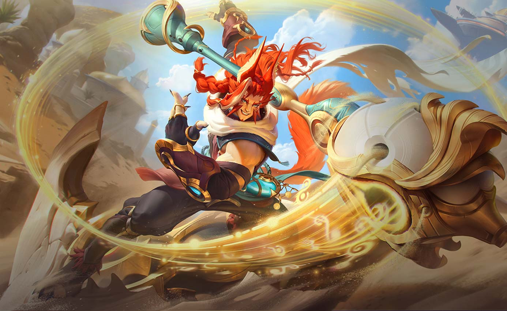
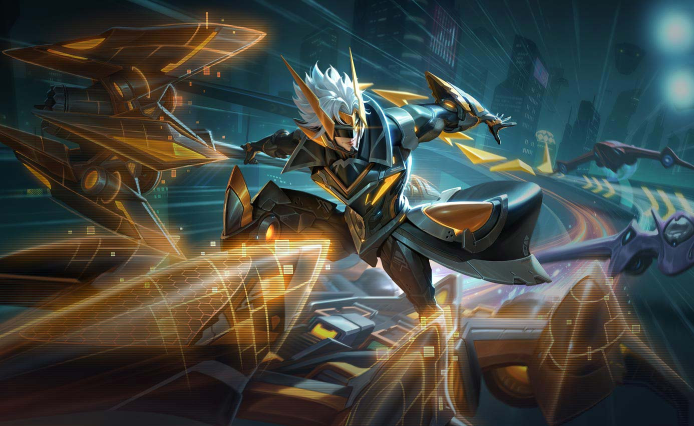
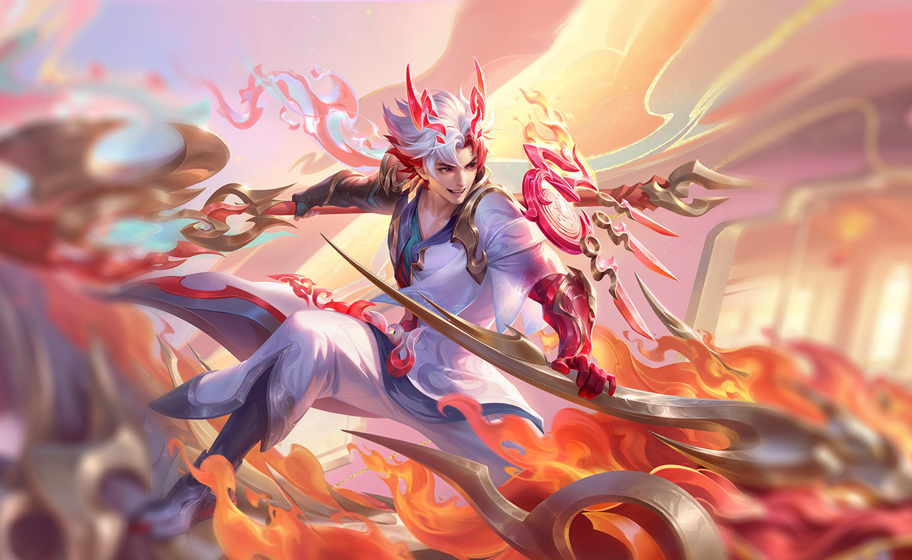
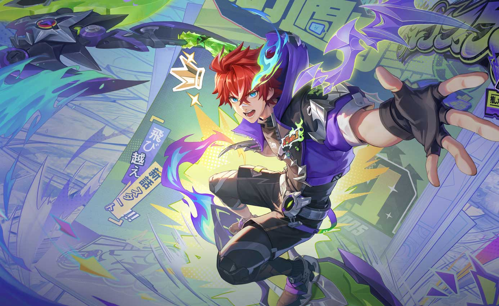

Trang Phục



Kỹ Năng
Sa mạc thần lực
Sau mỗi đoạn thời gian, Bijan cường hóa đòn đánh thường kế gây sát thương vật lý và hồi máu cho bản thân. Khi nhận sát thương vật lý hoặc sát thương chuẩn hoặc tung chiêu trúng mục tiêu, Bijan sẽ được tăng thêm giáp.
Bijan – Cuồng Kỵ Sĩ
Bijan cũng từng giống như những chiến binh bình thường khác, yêu thích sự tự do và những cuộc giao tranh hào hùng trên lưng ngựa. Nàng... ơ không, chàng yêu từng mảnh đất trên chiến trường sa mạc cho nên sứ mệnh bảo vệ vương quốc đã được giao phó cho chàng.
Bijan không phụ kỳ vọng của mọi người, chàng đã dùng ý chí kiên cường và khả năng xung trận mãnh liệt để đoàn kết toàn bộ quân đội lại thành một sức mạnh khổng lồ đáng gờm. Những sinh linh và kẻ thù đối đầu với chàng nói thật là đủ mọi kỳ hình quái trạng, thể loại nào cũng có, thậm chí cũng có cả những quái vật khổng lồ và khát máu nữa. Dưới sự càn quét của Bijan, lực lượng phe ta đã chiến đấu anh dũng và đẩy lùi ma tộc giương oai vạn dạn.
Sau cuộc chiến, Bijan tiếp tục hành trình bôn ba và lại tiếp tục sinh hoạt vui vẻ, sống cuộc sống hào sảng của một kỵ sĩ dũng mãnh. Tuy nhiên chàng cũng đã trưởng thành lên không ít đồng thời cũng phải gánh vác nhiều trọng trách lớn lao. Cho đến nay dù Bijan đã trở thành niềm kính ngưỡng, sự hâm mộ của mọi người nhưng anh vẫn luôn vững tay cương, sát cánh cùng đồng đội và canh giữ cho hòa bình, không để cho ma tộc tác oai tác quái quay lại thế giới.